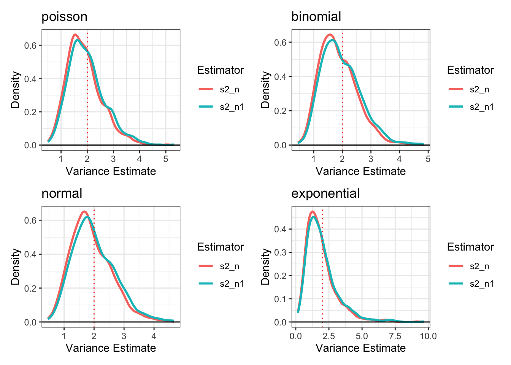
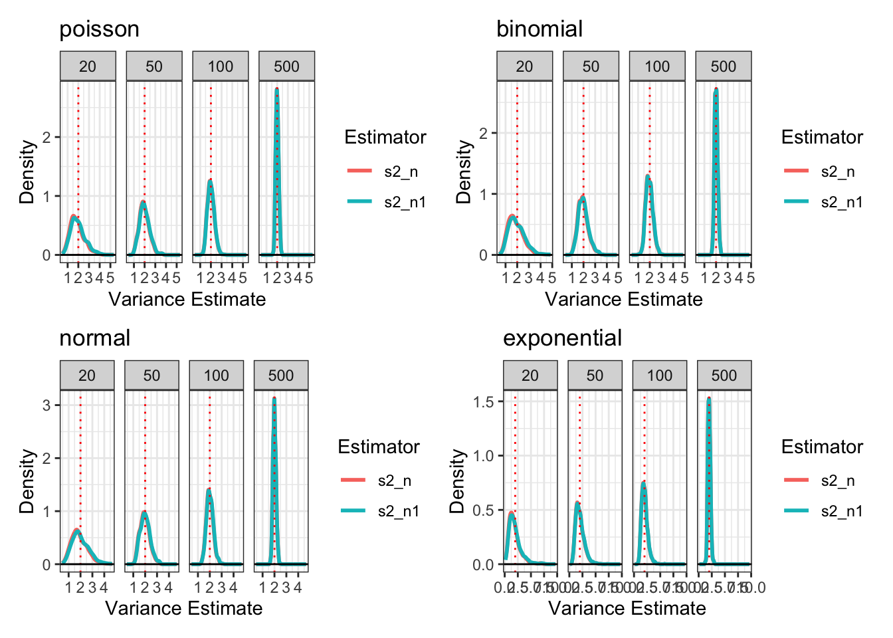
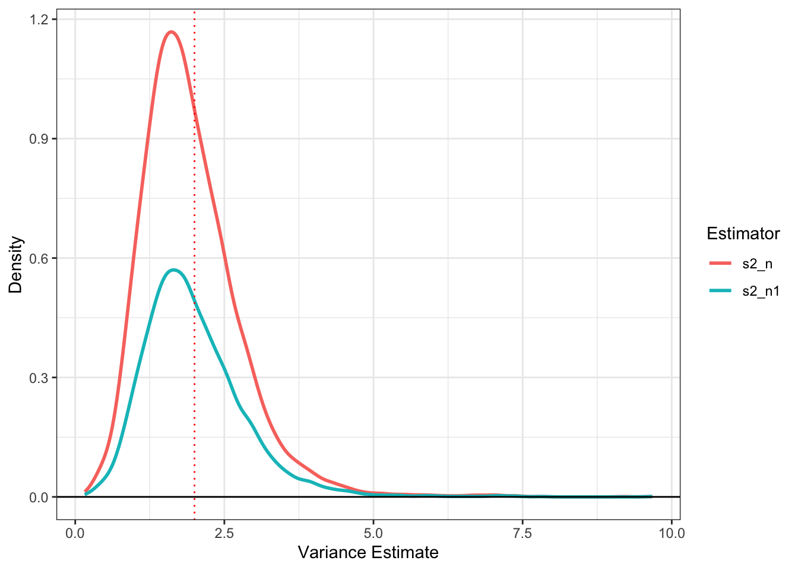
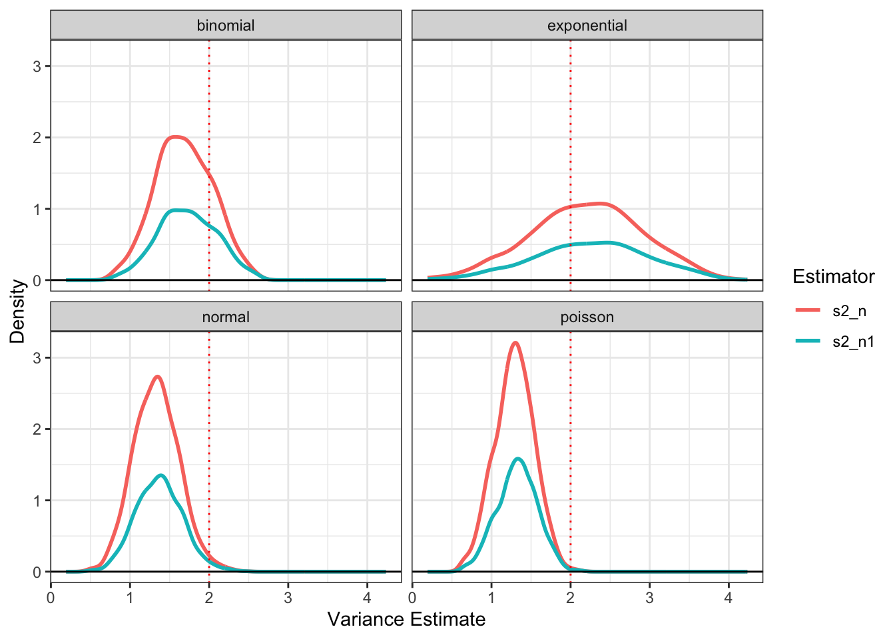

Complete the tasks below. Make sure to start your solutions in on a new line that starts with “Solution:”.
Make sure to use the Quarto Cheatsheet. This will make completing and writing up the lab much easier.
Make sure to use “enter” to make your code readable, so it doesn’t run off the page. I switched the Quarto document to automatically render to .pdf, so you can see what you’re submitting by default. You can switch back for the highlighting by moving the html block above the pdf block in the YAML header.
Don’t forget that you can copy-and-paste code when you’re doing something similar as we did in class!
Make sure to plot all computed probabilities. This is good ggplot practice AND will help make sure you don’t make a mistake when computing the probability.
1 Introduction
When performing point estimation, there isn’t just one right answer. For example, the Method of Moments (MOM) and Maximum Likelihood Estimates (MLEs) aren’t always the same.
One question that comes up, is why we calculate the sample variance as \[S_{n-1}^2 = \frac{1}{n-1} \sum_{i=1}^n (X_i -\bar{X})^2,\] when it is supposed to be the ``average squared distance from the mean, i.e., \[S_n^2 = \frac{1}{n} \sum_{i=1}^n (X_i -\bar{X})^2.\]
2 Comparing Estimators
2.1 Initial Simulation
In this lab, we will explore why we use \(S_{n-1}^2\) and not \(S_n^2\). To do this, we will generate data from four known distributions:
Remark: Note that I have selected the parameters so that the true variance for all four models is 2.
For each distribution, write a loop that completes the following 1000 times. Put set.seed(7272) at the top of your code chunk.
Generate a sample of size \(n\) from the distribution.
Calculate and save \(S_{n-1}^2\) and \(S_n^2.\)
Start with \(n=20\). Is there evidence that \(S_{n-1}^2\) is a better estimator than \(S_n^2\)?
Create a plot or combination of plots (using patchwork) to show the results across all four distributions. Make sure to create a corresponding table that numerically summarizes the results of the simulation. You should include \[\begin{align*}
\textrm{Bias} &= \textrm{Average of Estimates} - \textrm{True Value}\\
\textrm{Precision} &= \frac{1}{\textrm{Variance of Estimates}}\\
\textrm{Mean Square Error} &= \textrm{Bias}^2 + \textrm{Variance of Estimates}.
\end{align*}\]
Solution:
Code
library(tidyverse)library(patchwork)set.seed(7272)# inputed all of the data from the questionn <-20loop_reps <-1000true_variance <-2# created function for both estimators (from intro)sample_variances <-function(x){ xbar <-mean(x) s2_n1 <- (1/(length(x)-1)) *sum((x - xbar)^2) # created s2_n-1 s2_n <-mean((x - xbar)^2) # created s2_n return(c(s2_n = s2_n, s2_n1 = s2_n1))}# Poisson part# created empty matrix to be iteratedpoisson <-matrix(NA, nrow = loop_reps, ncol =2)# created loop that runs 1000 times that generate a sample of size n, calc and save estimatorsfor (i in1:loop_reps){ x <-rpois(n, lambda =2) poisson[i, ] <-sample_variances(x)}poisson_df <-data.frame(poisson) # created dataframe with results from function abovenames(poisson_df) <-c("s2_n", "s2_n1")poisson_df$dist <-"poisson"# Binomial partp <- (5-sqrt(21)) /10# inputed p parameter from lab# created empty matrix to be iteratedbinom <-matrix(NA, nrow = loop_reps, ncol =2)# created loop that runs 1000 times that generate a sample of size n, calc and save estimatorsfor (i in1:loop_reps){ x <-rbinom(n, size =50, prob = p) binom[i, ] <-sample_variances(x)}binom_df <-data.frame(binom) # created dataframe with results from functionnames(binom_df) <-c("s2_n", "s2_n1")binom_df$dist <-"binomial"# Normal part# created empty matrix to be iteratednormal <-matrix(NA, nrow = loop_reps, ncol =2)# created loop that runs 1000 times that generate a sample of size n, calc and save estimatorsfor (i in1:loop_reps){ x <-rnorm(n, mean =0, sd =sqrt(2)) normal[i, ] <-sample_variances(x)}normal_df <-data.frame(normal) # created dataframe with results from functionnames(normal_df) <-c("s2_n", "s2_n1")normal_df$dist <-"normal"# Exponential part# created empty matrix to be iteratedexp <-matrix(NA, nrow = loop_reps, ncol =2)# created loop that runs 1000 times that generate a sample of size n, calc and save estimatorsfor (i in1:loop_reps){ x <-rexp(n, rate =sqrt(1/2)) exp[i, ] <-sample_variances(x)}exp_df <-data.frame(exp) # created dataframe with results from functionnames(exp_df) <-c("s2_n", "s2_n1")exp_df$dist <-"exponential"# combined my results into one dataframeresults <-rbind(poisson_df, binom_df, normal_df, exp_df)# reshaped results into long formatted tableresults_long <- results |>pivot_longer(cols =c(s2_n, s2_n1),names_to ="Estimator",values_to ="Value")# created table with all my data:summary_table <- results_long |>group_by(dist, Estimator) |>summarize(mean_est =mean(Value),bias = mean_est - true_variance,precision =1/var(Value),MSE = bias^2+var(Value) )summary_table
# created plotsmake_plots <-function(y) {ggplot(results_long[results_long$dist == y, ]) +stat_density(aes(x = Value, color = Estimator),geom ="line", linewidth =1, position="dodge") +geom_vline(xintercept = true_variance, color ="red", linetype ="dotted") +geom_hline(yintercept =0) +theme_bw() +labs(title = y, x ="Variance Estimate", y ="Density")}p1 <-make_plots("poisson")p2 <-make_plots("binomial")p3 <-make_plots("normal")p4 <-make_plots("exponential")(p1 | p2) / (p3 | p4)

2.2 Simulation over various sample sizes
Consider the effect of the sample size have on these results. Provide a graphical and numerical summary of what happens as \(n\) increases – say \(n=20\), \(n=50\), \(n=100\), and \(n=500\). Does the result in your initial simulation hold across samples? Or, do things change as the sample size changes? Ensure to set your randomization seed.
solution:
Code
library(tidyverse)library(patchwork)set.seed(7272)# inputed all of the data from the questionn_values <-c(20, 50, 100, 500) # created vector of different n'sloop_reps <-1000true_variance <-2# created function for both estimators (from intro)sample_variances <-function(x){ xbar <-mean(x) s2_n1 <- (1/(length(x)-1)) *sum((x - xbar)^2) # created s2_n-1 s2_n <-mean((x - xbar)^2) # created s2_n return(c(s2_n = s2_n, s2_n1 = s2_n1))}# created empty dataframe for results to be storedresults <-data.frame()for (n in n_values){# poisson part (almost same as 2.1, added n column in dataframe) poisson <-matrix(NA, nrow = loop_reps, ncol =2)# created loop that runs 1000 times that generate a sample of size n, calc and save estimatorsfor (i in1:loop_reps){ x <-rpois(n, lambda =2) poisson[i, ] <-sample_variances(x) } poisson_df <-data.frame(poisson) # created dataframe with results from function abovenames(poisson_df) <-c("s2_n", "s2_n1") poisson_df$dist <-"poisson" poisson_df$n <- n # Binomial part (almost same as 2.1, added n column in dataframe) p <- (5-sqrt(21)) /10# inputed p parameter from lab# created empty matrix to be iterated binom <-matrix(NA, nrow = loop_reps, ncol =2)# created loop that runs 1000 times that generate a sample of size n, calc and save estimatorsfor (i in1:loop_reps){ x <-rbinom(n, size =50, prob = p) binom[i, ] <-sample_variances(x) } binom_df <-data.frame(binom) # created dataframe with results from functionnames(binom_df) <-c("s2_n", "s2_n1") binom_df$dist <-"binomial" binom_df$n <- n# Normal part (almost same as 2.1, added n column in dataframe)# created empty matrix to be iterated normal <-matrix(NA, nrow = loop_reps, ncol =2)# created loop that runs 1000 times that generate a sample of size n, calc and save estimatorsfor (i in1:loop_reps){ x <-rnorm(n, mean =0, sd =sqrt(2)) normal[i, ] <-sample_variances(x) } normal_df <-data.frame(normal) # created dataframe with results from functionnames(normal_df) <-c("s2_n", "s2_n1") normal_df$dist <-"normal" normal_df$n <- n# Exponential part (almost same as 2.1, added n column in dataframe)# created empty matrix to be iterated exp <-matrix(NA, nrow = loop_reps, ncol =2)# created loop that runs 1000 times that generate a sample of size n, calc and save estimatorsfor (i in1:loop_reps){ x <-rexp(n, rate =sqrt(1/2)) exp[i, ] <-sample_variances(x) } exp_df <-data.frame(exp) # created dataframe with results from functionnames(exp_df) <-c("s2_n", "s2_n1") exp_df$dist <-"exponential" exp_df$n <- n# append results results <-rbind(results, poisson_df, binom_df, normal_df, exp_df)}# reshaped results into long formatted table (same as 2.1)results_long <- results |>pivot_longer(cols =c(s2_n, s2_n1),names_to ="Estimator",values_to ="Value")# created table with all my data (same as 2.1):summary_table <- results_long |>group_by(dist, Estimator) |>summarize(mean_est =mean(Value),bias = mean_est - true_variance,precision =1/var(Value),MSE = bias^2+var(Value) )summary_table
# created plots (almost the same as 2.1)make_plots <-function(y) {ggplot(results_long[results_long$dist == y, ]) +stat_density(aes(x = Value, color = Estimator),geom ="line", linewidth =1, position="dodge") +geom_vline(xintercept = true_variance, color ="red", linetype ="dotted") +geom_hline(yintercept =0) +theme_bw() +labs(title = y, x ="Variance Estimate", y ="Density") +facet_wrap(~n, nrow =1) # facet wrapped by n. Included nrow = 1 because the plots were too squished before.}p1 <-make_plots("poisson")p2 <-make_plots("binomial")p3 <-make_plots("normal")p4 <-make_plots("exponential")(p1 | p2) / (p3 | p4)

As sample size increases, both estimators (although hard to see because the s2_n line is showing up behind the s2_n-1 line) improve their precision. Variance decreases for all four distributions as the distributions have higher density around the true variance as n increases. The bias of s2_n1 remains unbiased for all sample sizes of all four distributions. The bias of s2_n is slightly negatively biased in all four distributions, but decreases as n grows.
2.3 Simulation
You have written code to draw a random sample of various sizes from each distribution, and to calculate and store the calculated estimates. Rework your code to produce a density plot of the \(s_{n-1}^2\) and \(s_{n}^2\). Do you have a guess about their distribution? Ensure to set your randomization seed.
Solution:
Code
library(tidyverse)library(patchwork)set.seed(7272)# inputed all of the data from the questionn <-20loop_reps <-1000# created function for both estimators (same as 2.1)sample_variances <-function(x){ xbar <-mean(x) s2_n1 <- (1/(length(x)-1)) *sum((x - xbar)^2) # created s2_n-1 s2_n <-mean((x - xbar)^2) # created s2_n return(c(s2_n = s2_n, s2_n1 = s2_n1))}# Poisson part (same as 2.1)# created empty matrix to be iteratedpoisson <-matrix(NA, nrow = loop_reps, ncol =2)# created loop that runs 1000 times that generate a sample of size n, calc and save estimatorsfor (i in1:loop_reps){ x <-rpois(n, lambda =2) poisson[i, ] <-sample_variances(x)}poisson_df <-data.frame(poisson) # created dataframe with results from function abovenames(poisson_df) <-c("s2_n", "s2_n1")poisson_df$dist <-"poisson"# Binomial part (same as 2.1)p <- (5-sqrt(21)) /10# inputed p parameter from lab# created empty matrix to be iteratedbinom <-matrix(NA, nrow = loop_reps, ncol =2)# created loop that runs 1000 times that generate a sample of size n, calc and save estimatorsfor (i in1:loop_reps){ x <-rbinom(n, size =50, prob = p) binom[i, ] <-sample_variances(x)}binom_df <-data.frame(binom) # created dataframe with results from functionnames(binom_df) <-c("s2_n", "s2_n1")binom_df$dist <-"binomial"# Normal part (same as 2.1)# created empty matrix to be iteratednormal <-matrix(NA, nrow = loop_reps, ncol =2)# created loop that runs 1000 times that generate a sample of size n, calc and save estimatorsfor (i in1:loop_reps){ x <-rnorm(n, mean =0, sd =sqrt(2)) normal[i, ] <-sample_variances(x)}normal_df <-data.frame(normal) # created dataframe with results from functionnames(normal_df) <-c("s2_n", "s2_n1")normal_df$dist <-"normal"# Exponential part (same as 2.1)# created empty matrix to be iteratedexp <-matrix(NA, nrow = loop_reps, ncol =2)# created loop that runs 1000 times that generate a sample of size n, calc and save estimatorsfor (i in1:loop_reps){ x <-rexp(n, rate =sqrt(1/2)) exp[i, ] <-sample_variances(x)}exp_df <-data.frame(exp) # created dataframe with results from functionnames(exp_df) <-c("s2_n", "s2_n1")exp_df$dist <-"exponential"# combined my results into one dataframeresults <-rbind(poisson_df, binom_df, normal_df, exp_df)# reshaped results into long formatted tableresults_long <- results |>pivot_longer(cols =c(s2_n, s2_n1),names_to ="Estimator",values_to ="Value")# created the density plot:ggplot(results_long) +stat_density(aes(x = Value, color = Estimator), geom="line", linewidth =1) +geom_vline(xintercept =2, color ="red", linetype="dotted") +geom_hline(yintercept =0) +theme_bw() +labs(x ="Variance Estimate", y ="Density")

The density plots for both s2_n and s2_n-1 are right skewed. Based off what we learned in class, I would assume they follow either an exponential, gamma or lognormal distribution.
2.4 Bootstrap
Now, take one sample from each distribution. Instead of drawing a random sample at each iteration, sample with replacement from the one sample. Produce a density plot of the \(s_{n-1}^2\) and \(s_{n}^2\). Do we get roughly the same information as we do in the full simulation? Try this over several seeds – what do you notice? Ensure to set your randomization seed.
Solution:
Code
library(tidyverse)library(patchwork)set.seed(7272)# inputed all of the data from the questionn <-20loop_reps <-1000# created function for both estimators (same as 2.1)sample_variances <-function(x){ xbar <-mean(x) s2_n1 <- (1/(length(x)-1)) *sum((x - xbar)^2) # created s2_n-1 s2_n <-mean((x - xbar)^2) # created s2_n return(c(s2_n = s2_n, s2_n1 = s2_n1))}# Poisson part # generated one random sample from poisson distributionpoisson <-rpois(n, lambda =2)# created empty matrix to be appended by bootstrapped fucntionpoisson_boot <-matrix(NA, nrow = loop_reps, ncol =2)for (i in1:loop_reps){ x_bootstrapped <-sample(poisson, size = n, replace =TRUE) # did the resampling to create a bootstrapped sample (same as in class) poisson_boot[i, ] <-sample_variances(x_bootstrapped)}poisson_df <-data.frame(poisson_boot) # created dataframe with results from function abovenames(poisson_df) <-c("s2_n", "s2_n1")poisson_df$dist <-"poisson"# Binomial part # generated one random sample from binomial distributionp <- (5-sqrt(21))/10binomial <-rbinom(n, size =50, prob = p)# created empty matrix to be appended by bootstrapped fucntionbinom_boot <-matrix(NA, nrow = loop_reps, ncol =2)for (i in1:loop_reps){ x_bootstrapped <-sample(binomial, size = n, replace =TRUE) # did the resampling to create a bootstrapped sample (same as in class) binom_boot[i, ] <-sample_variances(x_bootstrapped)}binom_df <-data.frame(binom_boot) # created dataframe with results from function abovenames(binom_df) <-c("s2_n", "s2_n1")binom_df$dist <-"binomial"# Normal part # generated one random sample from normal distributionnormal <-rnorm(n, mean =0, sd =sqrt(2))# created empty matrix to be appended by bootstrapped fucntionnormal_boot <-matrix(NA, nrow = loop_reps, ncol =2)for (i in1:loop_reps){ x_bootstrapped <-sample(normal, size = n, replace =TRUE) # did the resampling to create a bootstrapped sample (same as in class) normal_boot[i, ] <-sample_variances(x_bootstrapped)}normal_df <-data.frame(normal_boot) # created dataframe with results from function abovenames(normal_df) <-c("s2_n", "s2_n1")normal_df$dist <-"normal"# Exponential part # generated one random sample from exponential distributionexp <-rexp(n, rate =sqrt(1/2))# created empty matrix to be appended by bootstrapped fucntionexp_boot <-matrix(NA, nrow = loop_reps, ncol =2)for (i in1:loop_reps){ x_bootstrapped <-sample(exp, size = n, replace =TRUE) # did the resampling to create a bootstrapped sample (same as in class) exp_boot[i, ] <-sample_variances(x_bootstrapped)}exp_df <-data.frame(exp_boot) # created dataframe with results from function abovenames(exp_df) <-c("s2_n", "s2_n1")exp_df$dist <-"exponential"# combined my results into one dataframe (same as 2.1)results <-rbind(poisson_df, binom_df, normal_df, exp_df)# reshaped results into long formatted table (same as 2.1)results_long <- results |>pivot_longer(cols =c(s2_n, s2_n1),names_to ="Estimator",values_to ="Value")# created the density plot (same as 2.3):ggplot(results_long) +stat_density(aes(x = Value, color = Estimator), geom="line", linewidth =1) +geom_vline(xintercept =2, color ="red", linetype="dotted") +geom_hline(yintercept =0) +facet_wrap(~ dist) +theme_bw() +labs(x ="Variance Estimate", y ="Density")

In the 7272 seed, both the s2_n and s2_n-1 distributions were right skewed. The s2_n seems to be slightly further biased downwards than the s2_n-1 distribution. Unlike the full simulation in 2.3, the bootstrapping distributions are centered around the sample variance (around 1.4) as opposed to being centered around the population variance (2). When I used different seeds (I tried 735), the shapes of the distributions generally stayed the same but there seemed to be less spread and higher densities near the variances. Additionally, the center of some of the distributuions changed (poisson changed from being centered around 2.3 in the 7272 seed to about 1.2 in the 735 seed). I believe this is because each seed generates a different sample and the bootstrapping distribution reflects the distribution of that sample as opposed to the population.
3 Executive Summary
Summarize the work you’ve done here to provide a brief (200-300 word) summary of the simulation and the results using your work in Lab 11. Your summary should be professional, clear, and all claims should be corroborated with statistical support.
Solution: The analysis investigates the estimators s2_n and s2_n-1 across a Poisson, Binomial, Normal, and Exponential distribution with a true variance of 2 in all cases. The next sections of the lab investigated the differences using different sample sizes, simulations, and bootstrapping methods. In the first simulation, both estimators were computed when 1000 samples were drawn over and over for different sample sizes. The results showed that s2_n-1 was approximately unbiased, while s2_n-1 was slightly biased downwards. As sample size increased for both estimators in the second part of the lab, both estimator’s precision improved as the variance decreased. s2_n-1 stayed unbiased, while s2_n was less biased than before, but still biased downwards. The density plots showed that both estimators were still right-skewed. The bootstrapping portion of the lab showed that for specific samples, the both estimators’ distributions were centered around the sample variance rather than the true variance. When the bootstrapping was done with different seeds, the results varoed slightly depending on the initial sample. Overall, the results showed that s2_n-1 was a more reliable estimator of precision, more so in the smaller samples due to the fact that it was unbiased and had a smaller variance.